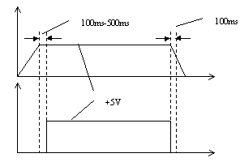
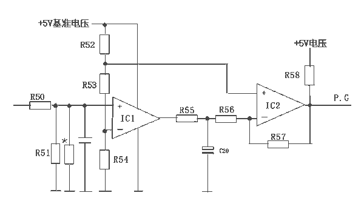
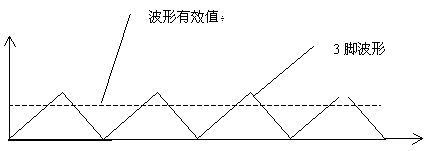

|
为朋友组装的一台电脑（主要用于接收股票信息）突然发病，故障现象是机器不能启动,电源指示灯和硬盘灯、光驱灯全亮。朋友的机器是一年前组装的，用的是麒麟747主板、AT机箱、Cyrix266
CPU、广明星股票卡。根据故障现象，判断是由于某种原因，使主机处于初始化状态，启动程序不能往下进行。考虑到故障可能是由接触不良或者元器件损坏引起的，因朋友也具备一定的电子技术方面的知识，笔者用电话遥控指挥他维修了几次，没有效果，最后只好亲自出马，带上必备的配件赶去，按照常规的检查方法检查一遍，徒劳无功，因双方工作都较忙，最后只好把主机带回家里。
回到家里，把机器上的各零部件一一拔下，只保留由主板、内存、CPU、显卡、电源、显示器组成的最小系统，开机检测，故障现象依旧。索性把各零部件拆下，在工作台上一一检测，检测结果也很令人沮丧——各零部件都是好的。
因为在工作台上使用的是另外的电源，很明显，故障元件只能是电源了，一开始之所以没怀疑电源，是因为已经吩咐朋友把电源检测过了，对自已的技术很有点自负的朋友再三强调电源各路输出电压正常。用万用表检测该机上电源的各路输出电压，均正常，检测P.G信号，其电压为零，原来故障原因在此。
P.G信号即电源中的POWER GOOD信号，又称“电源好”信号，在ATX电源中，该信号称PW－OK信号。微机开机后，由于各路输出电压的时序不同，易对主板的工作状态造成混乱，因此，电源中特设了一个延迟的P.G信号提供给主机板，该信号从IBM－PC诞生时就有，一直沿用至今。对该信号的要求是：开机后，相对于＋5V电压，延迟100ms～300ms产生，在关机时，则提前100ms消失。其波形和＋5V电压的时间对应示意图见图1。在主板上，该信号和主机的RESET信号是逻辑与的关系，开机后，当P.G信号由0V跳变到＋5V时，微机开始启动，当P.G没有信号时，微机相当于一直按下RESET键不放（此时硬盘灯、光驱灯常亮），不能进入初始化状态；当开机时，如果P.G信号与其它各路输出电压时序混乱（一般指延迟时间不足），则开机后机器也不能启动，但和该信号没有时不同的是，此时按一下RESET键，机器又能启动。要注意区分这两种故障，如果开机后该信号不稳，时有时无，则主机就会频繁地重新启动。

与P.G信号相关的电路图见图2。在AT电源中，脉冲宽度调制（PWM）集成电路LM494的第12脚是工作电压输入端；第14脚是＋5V基准电压输出端，给保护电路、P.G信号形成电路等提供工作电压和基准电压；第3脚是TL494内部振荡器的振荡脉冲输出端，在电源正常工作时，该脚的波形图见图3，该脚输出电压经R50、R51分压后加到LM339中IC1的同相输入端；IC1和IC2
是集成电路LM339中的两个比较器，LM339的工作电压由＋5V基准电压提供。在电路中，各电压的产生有一定的次序。开机后，电源的各路电压输出端逐渐建立起正常的电压，TL494的12脚得到工作电压，其内部的稳压器输出稳定的＋5V电压，一路送给LM339作为工作电压，另一路经R52和R53、R54分压作为IC1、IC2的比较基准电压。同时TL494内部的振荡器开始工作，因TL494具有软启动装置，第3脚输出的振荡脉冲逐渐由无到有、由弱变强，当第3脚的脉冲信号电压有效值不足2.5V时，IC1因同相输入端的电压较反相输入端的电压低，输出低电平，同理，IC2也输出低电平，此时没有P.G信号。当第3脚的脉冲信号幅度达到正常水平，其电压有效值达到＋2.5V时，
IC1输出＋5V高电平，该高电平通过R55对C20充电，当C20上的电压达到＋3.5V时，IC2翻转，输出延迟的高电平作为P.G信号；当关机时，由于IC
LM494供电端的滤波电解电容容量（4.7μF）较小，而相比电源各路输出电压的滤波电解电容容量（2200 μF）较大，该电压较早消失，导致＋5基准电压即LM339的工作电压消失，IC2输出电平变低，达到P.G信号比电源输出电压提早消失的目的。

目测相关的电路，没有明显损坏的元件。测量IC1、IC2的工作电压＋5V正常，LM494的第12脚的电压＋24V也正常，但IC1输出电位较低，导致IC2的输出即P.G信号输出不正常。因比较器输入端的输入阻抗较高，用万用表不易测得其正确的电压，测得的电压并不能反映该脚的真实电压值。通过前面的分析，要输出正常的P.G信号，首先IC1应输出高电平，而此时该端电压不正常，究其原因是其同相输入端的电压达不到要求的幅度。测该部分没有损坏的元件，根据描绘出的电路图，发现在IC1的同相输入端有一个调整电阻R＊，是用来调整IC1同相输入端的电压的，现其电压偏低，说明调整电阻R＊和R51的并联阻值太小，索性焊下R＊，再开机，机器已能正常启动，此时测P.G信号输出端（橙色线）电压为正常＋5V。
该例故障排除较简单，但故障现象却较少见，究其原因，可能属电源使用一段时间后部分参数发生变化导致了该故障。欢迎和我联系：lihongl@jn－public.sd.cninfo.net
。
(山东 王庆东)
|